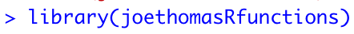
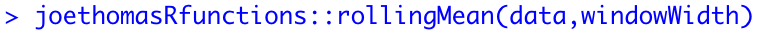

Calculate moving averages in R
This activity is based on the 'rollingMean' function from the joethomasRfunctions package for R. Click here if you need instructions on how to install the package from GitHub.
Why calculate a moving average?
A moving average is an average (mean) value that is calculated across a 'window' of values of a specific length.
Let's pretend we are recording the number of
customers in a bakery, every hour, for 5 hours.
Based on the data above there were:
What if you wanted to know which 3 hour period had the highest number of customers?
The final step is to calculate an average (mean) value for each of the windows.
How to calculate a moving average using R.
There is a function in the joethomasRfunctions package that calculates moving averages for you.
Make sure the first require the package.

Now use the 'rollingMean' function to calculate the moving averages.

There are two inputs for this function.
- data
A series of values.
- windowWidth
The width of the window you wish you calculate an average value. For the example above, windowWidth would equal 3.
That's it!